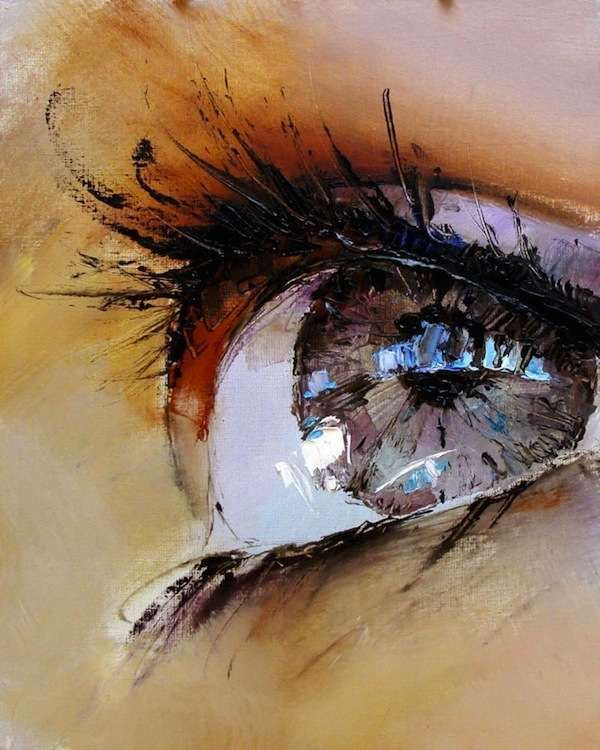
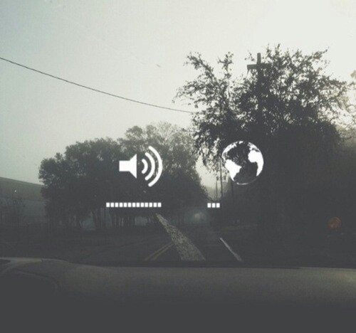

What I like about art?
Art is created and enjoyed by many people for many reasons. However, one of the things that I like about what art does, is that it extends and expand our shared common visual language. When new visual ideas are first introduced by the artist, they are often seen as shocking, and perhaps even as incomprehensible. However, with time the best and most effective of these ideas are accepted. There is nothing harder than trying to grasp what was shocking or illuminating about certain images, or ways of making images, once the shock is gone, and we have all absorbed this bit of visual data into our own vocabularies. Artists show us new ways to see familiar things, and how to interpret new situations and events through various kinds of visual shorthand.
Differents types of art that exist
Poetry:
This is composed of rhythm, stanzas and verses. The presence of literary images such as metaphor, irony, comparisons, and other rhetorical figures require an active reading to achieve understanding.
Painting:
It turn to the use of different substances and pigments to make graphic representations in order to create a visual art. For this, it uses the combination of colors and lines.
In this discipline, which is extremely ancient (prior to writing), there are different genres, some of them are: portraits, still life, naked, landscapes, costumbristas, figurative and self-portrait, among others. Some of the techniques that exist are oil, tapestry, fresco, watercolor, watercolor, stained glass and temper.
Music:
In music, the two most important elements are rhythm and sound, which appear together and ordered by different sound and rhythmic structures. Depending on the instruments used, it is possible to speak of two ways to divide musical genres: instrumental and vocal.
In the latter, there is a predominance of voice, and there may or may not be instrumental presence. Instrumental genres, however, are created only for instruments.
Sculpture:
In this discipline the sculptor molds bulky figures in wood, clay, stone or any other material to express beauty. Inside the sculpture we speak of two branches: ornamental and statuary.
The latter represents the human figure and suprasensible conceptions of man. The ornamental, on the other hand, represents the rest of the living beings: plants and animals.
Dance:
In this discipline are made rhythmic body movements through which it is possible to express emotions and feelings. It may be accompanied by music, although it is not inherent. In dance, body movements are combined with rhythmic notions and the use of space.
Also it uses what is the choreography, which is the set of predetermined movements that will guide what steps will be followed in a certain dance.
Architecture:
this discipline consists of the technique of constructing and projecting structures and buildings. It seeks to satisfy human needs by altering the physical environment, but it is also done for merely aesthetic purposes.
Some of the most recognized styles are Gothic, Renaissance and Baroque architecture.